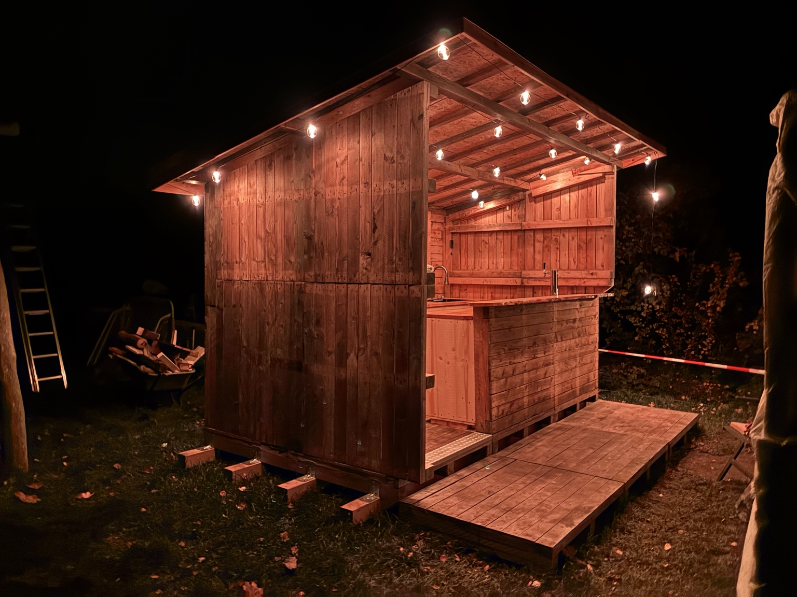

Outdoor-Bar
Aus alten Paletten sollte mehr entstehen als gewöhnliche Palettenmöbel.

Ausgangspunkt
Am Anfang standen alte Paletten. Das Material war vorhanden und sollte nicht einfach entsorgt oder beliebig verbaut werden. Gleichzeitig sollte daraus aber auch keine klassische Palettenlösung entstehen, wie man sie schon unzählige Male gesehen hat.
Herausforderung
Paletten sind praktisch, aber gestalterisch schnell sehr grob. Wenn man sie unverändert nutzt, entsteht oft ein improvisierter Look. Für dieses Projekt sollte genau das vermieden werden.
Ziel
Das Ziel war eine individuelle Outdoor-Bar, die vorhandenes Material nutzt, aber nicht nach Standard-Palettenmöbel aussieht. Sie sollte als Treffpunkt funktionieren, den Außenbereich aufwerten und zeigen, dass auch aus einfachen Materialien eine besondere Lösung entstehen kann, wenn man sie richtig plant.
Lösungsansatz
Der Ansatz war, die Paletten nicht als fertiges Möbelstück zu betrachten, sondern als Rohmaterial. Aus dem vorhandenen Material wurde eine neue Form entwickelt. Proportionen, Nutzung und Wirkung wurden bewusst betrachtet.
Ergebnis
Die Outdoor-Bar zeigt, wie aus einer einfachen Ausgangslage ein individuelles Projekt entstehen kann. Nicht jedes Projekt beginnt mit einem fertigen Plan. Manchmal beginnt es mit einem Material, einer Idee oder dem Satz: Daraus müsste man doch etwas machen können.
Bilder zum Projektbeispiel
{kind=link}
{kind=link}
{kind=link}
{kind=link}
{kind=link}
{kind=link}
Schildere dein Anliegen.
TRISSI Engineering schaut sich dein Problem, deine Idee oder deinen Wunsch an und prüft, welcher Weg sinnvoll ist.
engineering@trissi.net
Hilfreich:
Fotos, Maße, vorhandene Materialien, gewünschte Funktion, Einschränkungen und erste Ideen.